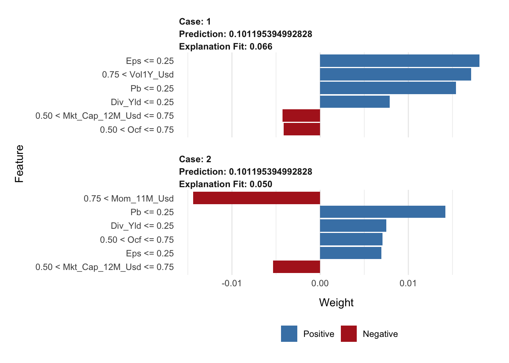

Chapter 14 Interpretability
This chapter is dedicated to the techniques that help understand the way models process inputs into outputs. A recent book, (Molnar (2019) available at https://christophm.github.io/interpretable-ml-book/), is entirely devoted to this topic and we highly recommend to have a look at it. Another more introductory and less technical reference is Hall and Gill (2019). Obviously, in this chapter, we will adopt a tone which is factor-investing orientated and discuss examples related to ML models trained on a financial dataset.
Quantitative tools that aim for interpretability of ML models are required to satisfy two simple conditions:
- That they provide information about the model.
- That they are highly comprehensible.
Often, these tools generate graphical outputs which are easy to read and yield immediate conclusions.
In attempts to white-box complex machine learning models, one dichotomy stands out:
- Global models seek to determine the relative role of features in the construction of the predictions once the model has been trained. This is done at the global level, so that the patterns that are shown in the interpretation hold on average over the whole training set.
- Local models aim to characterise how the model behaves around one particular instance by considering small variations around this instance. The way these variations are processed by the original model allows to simplify it by approximating it, e.g., in a linear fashion. This approximation can for example determine the sign and magnitude of the impact of each relevant feature in the vicinity of the original instance.
Molnar (2019) proposes another classification of interpretability solutions by splitting interpretations that depend on one particular model (e.g., linear regression or decision tree) versus the interpretations that can be obtained for any kind of model. In the sequel, we present the methods according to the global versus local dichotomy.
14.1 Global interpretations
14.1.1 Simple models as surrogates
Let us start with the simplest example of all. In a linear model, \[y_i=\alpha+\sum_{k=1}^K\beta_kx_i^k+\epsilon_i,\] the following elements are usually extracted from the estimation of the \(\beta_k\):
- the \(R^2\), which appreciates the global fit of the model (possibly penalized to prevent overfitting with many regressors). The \(R^2\) is usually computed in-sample;
- the sign of the estimates \(\hat{\beta}_k\), which indicates the direction of the impact of each feature \(x^k\) on \(y\);
- the \(t\)-statistics \(t_{\hat{\beta_k}}\), which evaluate the magnitude of this impact: regardless of its direction, large statistics in absolute value reveal prominent variables. Often, the \(t\)-statistics are translated into \(p\)-values which are computed under some suitable distributional assumptions.
The last two indicators are useful because they inform the user on which features matter the most and on the sign of the effect of each predictor. This gives a simplified view of how the model processes the features into the output. Most tools that aim to explain black boxes follow the same principles.
Decision trees, because they are easy to picture, are also great models for interpretability. Thanks to this favorable feature, they are target benchmarks for simple models. Recently, Vidal, Pacheco, and Schiffer (2020) propose a method to reduce an ensemble of trees into a unique tree. The aim is to propose a simpler model that behaves exactly like the complex one.
More generally, it is an intuitive idea to resort to simple models to proxy more complex algorithms. One simple way to do so is to build so-called surrogate models. The process is simple:
- train the original model \(f\) on features \(\textbf{X}\) and labels \(\textbf{y}\);
- train a simpler model \(g\) to explain the predictions of the trained model \(\hat{f}\) given the features \(\textbf{X}\): \[\hat{f}(\textbf{X})=g(\textbf{X})+\textbf{error}\]
The estimated model \(\hat{g}\) explains how the initial model \(\hat{f}\) maps the features into the labels. To illustrate this, we use the iml package (see Molnar, Casalicchio, and Bischl (2018)). The simpler model is a tree with a depth of two.
library(iml)
mod <- Predictor$new(fit_RF,
data = training_sample %>% dplyr::select(features))
dt <- TreeSurrogate$new(mod, maxdepth = 2)
plot(dt)FIGURE 14.1: Example of surrogate tree.
The representation of the tree is different, compared to those seen in Chapter 7. Indeed, the four possible outcomes (determined by the conditions in the top lines) no longer yield a simple value (average of the label), but more information is given, in the form of a box plot (including the interquartile range and outliers). In the above representation, it is the top right cluster that seems to have the highest rewards, with especially many upward outliers. This cluster consists of small firms with volatile past returns.
14.1.2 Variable importance (tree-based)
One incredibly favorable feature of simple decision trees is their interpretability. Their visual representation is clear and straightforward. Just like regressions (which are another building block in ML), simple trees are easy to comprehend and do not suffer from the black-box rebuke that is often associated to more sophisticated tools.
Indeed, both random forests and boosted trees fail to provide perfectly accurate accounts of what is happening inside the engine. In contrast, it is possible to compute the aggregate share (or importance) of each feature in the determination of the structure of the tree once it has been trained.
After training, it is possible to compute, at each node \(n\) the gain \(G(n)\) obtained by the subsequent split if there are any, i.e., if the node is not a terminal leaf. It is also easy to determine which variable is chosen to perform the split, hence we write \(\mathcal{N}_k\) the set of nodes for which feature \(k\) is chosen for the partition. Then, the global importance of each feature is given by \[I(k)=\sum_{n\in \mathcal{N}_k}G(n),\] and it is often rescaled so that the sum of \(I(k)\) across all \(k\) is equal to one. In this case, \(I(k)\) measures the relative contribution of feature \(k\) in the reduction of loss during the training. A variable with high importance will have a greater impact on predictions. Generally, these variables are those that are located close to the root of the tree.
Below, we take a look at the results obtained from the tree-based models trained in Chapter 7. We start by recylcling the output from the three regression models we used. Notice that each fitted output has its own structure and importance vectors have different names.
tree_VI <- fit_tree$variable.importance %>% # VI from tree model
as_tibble(rownames = NA) %>% # Transform in tibble
rownames_to_column("Feature") # Add feature column
RF_VI <- fit_RF$importance %>% # VI from random forest
as_tibble(rownames = NA) %>% # Transform in tibble
rownames_to_column("Feature") # Add feature column
XGB_VI <- xgb.importance(model = fit_xgb)[,1:2] # VI from boosted trees
VI_trees <- tree_VI %>% left_join(RF_VI) %>% left_join(XGB_VI) # Aggregate the VIs
colnames(VI_trees)[2:4] <- c("Tree", "RF", "XGB") # New column names
norm_1 <- function(x){return(x / sum(x))} # Normalizing function
VI_trees %>% na.omit %>% mutate_if(is.numeric, norm_1) %>% # Plotting sequence
gather(key = model, value = value, -Feature) %>%
ggplot(aes(x = Feature, y = value, fill = model)) + geom_col(position = "dodge") +
theme(axis.text.x = element_text(angle = 35, hjust = 1))FIGURE 14.2: Variable importance for tree-based models
In the above code, tibbles are like dataframes (they are the v2.0 of dataframes so to speak). Given the way the graph is coded, Figure 14.2 is in fact misleading. Indeed, by construction, the simple tree model only has a small number of features with nonzero importance: in the above graph, there are only 3: capitalization, price-to-book and volatility. In contrast, because random forest and boosted trees are much more complex, they give some importance to many predictors. The graph shows the variables related to the simple tree model only. For scale reasons, the normalization is performed after the subset of features is chosen. We prefered to limit the number of features shown on the graph for obvious readability concerns.
There are differences in the way the models rely on the features. For instance, the most important feature changes from a model to the other: the simple tree model gives the most importance to the price-to-book ratio, while the random forest bets more on volatility and boosted trees give more weight to capitalization.
One defining property of random forests is that they give a chance to all features. Indeed, by randomizing the choice of predictors, each individual exogenous variable has a shot at explaining the label. Along with boosted trees, the allocation of importance is more balanced across predictors, compared to the simple tree which puts most of its eggs in just a few baskets.
14.1.3 Variable importance (agnostic)
The idea of quantifying the importance of each feature in the learning process can be extended to non tree-based models. We refer to the papers mentioned in the study Fisher, Rudin, and Dominici (2019) for more information on this stream of the literature. The premise is the same as above: the aim is to quantify to what extent one feature contributes to the learning process.
One way to track the added value of one particular feature is to look at what happens if its values inside the training set are entirely shuffled. If the original feature plays an important role in the explanation of the dependent variable, then the shuffled version of the feature will lead to a much higher loss.
The baseline method to assess feature importance in the general case is the following.
- Train the model on the original data and compute the associated loss \(l^*\).
- For each feature \(k\), create a new training dataset in which the feature’s values are randomly permuted. Then, evaluate the loss \(l_k\) of the model based on this altered sample.
- Rank the variable importance of each feature, computed as a difference \(\text{VI}_k=l_k-l^*\) or a ratio \(\text{VI}_k=l_k/l^*\).
Whether to compute the losses on the training set or the testing set is an open question and remains to the appreciation of the analyst.
The above procedure is of course random and can be repeated so that the importances are averaged over several trials: this improve the stability of the results. This algorithm is implemented in the FeatureImp() function of the iml R package developed by the author of Molnar (2019). We also recommend the vip package, see Greenwell and Boehmke (n.d.).
Below, we implement this algorithm manually so to speak for the features appearing on Figure 14.2. We test this approach on ridge regressions and recycle the variables used in Chapter 6. We start by the first step: computing the loss on the original training sample.
fit_ridge_0 <- glmnet(x_penalized_train, y_penalized_train, # Trained model
alpha = 0, lambda = 0.01)
l_star <- mean((y_penalized_train-predict(fit_ridge_0, x_penalized_train))^2) # LossNext, we evaluate the loss when each of the predictors have been sequentially shuffled. To reduce computation time, we only make one round of shuffling.
l <- c() # Initialize
for(i in 1:nrow(VI_trees)){ # Loop on the features
feat_name <- as.character(VI_trees[i,1])
temp_data <- training_sample %>% dplyr::select(features) # Temp feature matrix
temp_data[, which(colnames(temp_data) == feat_name)] <- # Shuffles the values
sample(temp_data[, which(colnames(temp_data) == feat_name)]
%>% pull(1), replace = FALSE)
x_penalized_temp <- temp_data %>% as.matrix() # Predictors into matrix
l[i] <- mean((y_penalized_train-predict(fit_ridge_0, x_penalized_temp))^2) # = Loss
}Finally, we plot the results.
data.frame(Feature = VI_trees[,1], loss = l - l_star) %>%
ggplot(aes(x = Feature, y = loss)) + geom_col() +
theme(axis.text.x = element_text(angle = 35, hjust = 1))FIGURE 14.3: Variable importance for a ridge regression model.
The resulting importances are in line with thoses of the tree-based models: the most prominent variables are volatility-based, market capitalization-based, and the price-to-book ratio - these closely match the variables from Figure 14.2. Note that in some cases (e.g., the share turnover), the score can even be negative, which means that the predictions are more accurate than the baseline model when the values of the predictor are shuffled!
14.1.4 Partial dependence plot
Partial dependence plots (PDPs) aim at showing the relationship between the output of a model and the value of a feature (we refer to section 8.2 of Friedman (2001) for an early treatment of this subject).
Let us fix a feature \(k\). We want to understand the average impact of \(k\) on the predictions of the trained model \(\hat{f}\). In order to do so, we assume that the feature space is random and we split it in two: \(k\) versus \(-k\), which stands for all features except for \(k\). The partial dependence plot is defined as
\[\begin{equation} \tag{14.1} \bar{f}_k(x_k)=\mathbb{E}[\hat{f}(\textbf{x}_{-k},x_k)]=\int \hat{f}(\textbf{x}_{-k},x_k)d\mathbb{P}_{-k}(\textbf{x}_{-k}), \end{equation}\]
where \(d\mathbb{P}_{-k}(\cdot)\) is the (multivariate) distribution of the non-\(k\) features \(\textbf{x}_{-k}\). The above function takes the feature values \(x_k\) as argument and keeps all other features frozen via their sample distributions: this shows the impact of feature \(k\) solely. In practice, the average is evaluated using Monte-Carlo simulations:
\[\begin{equation} \tag{14.2} \bar{f}_k(x_k)\approx \frac{1}{M}\sum_{m=1}^M\hat{f}\left(x_k,\textbf{x}_{-k}^{(m)}\right), \end{equation}\] where \(\textbf{x}_{-k}^{(m)}\) are independent samples of the non-\(k\) features.
Theoretically, PDPs could be computed for more than one feature at a time. In practice, this is only possible for two features (yielding a 3D surface) and is more computationally intense.
We illustrate this concept below, using the dedicated package iml (interpretable machine learning) - see also the pdp package documented in Greenwell (2017). The model we seek to explain is the random forest built in Section 7.2. We recycle some variables used therein. We choose to test the impact of the price-to-book ratio on the outcome of the model.
library(iml) # One package for interpretability
mod_iml <- Predictor$new(fit_RF, # This line encapsulates the objects
data = training_sample %>% dplyr::select(features))
pdp_PB = FeatureEffect$new(mod_iml, feature = "Pb") # This line computes the PDP for p/b ratio
plot(pdp_PB) # Plot the partial dependence.FIGURE 14.4: Partial dependence plot for the price-to-book ratio on the random forest model
The average impact of the price-to-book ratio on the predictions is decreasing. This was somewhat expected, given the conditional average of the dependent variable given the price-to-book ratio. This latter function is depicted in Figure 7.3 and shows a behavior comparable to the above curve: strongly decreasing for small value of P/B and then relatively flat. When the price-to-book ratio is low, firms are undervalued. Hence their higher returns are in line with the value premium.
Finally, we refer to Zhao and Hastie (2019) for a theoretical discussion on the causality property of PDPs. Indeed, a deep look at the construction of the PDPs suggests that they could be interpreted as a causal representation of the feature on the model’s output.
14.2 Local interpretations
Whereas global interpretations seek to assess the impact of features on the output \(overall\), local methods try to quantify the behavior of the model on particular instances or the neighborhood thereof. Local interpretability has recently gained traction and many papers have been published on this topic. Below, we outline the most widespread methods.26
14.2.1 LIME
LIME (Local Interpretable Model-Agnostic Explanations) is a methodology originally proposed by Ribeiro, Singh, and Guestrin (2016). Their aim is to provide a faithfull account of the model under two constraints:
- simple interpretability, which implies a limited number of variables with visual or textual representation. This is to make sure any human can easily understand the outcome of the tool;
- local faithfulness: the explanation holds for the vicinity of the instance.
The original (black-box) model is \(f\) and we assume we want to approximate its behavior around instance \(x\) with the interpretable model \(g\). The simple function \(g\) belongs to a larger class \(G\). The vicinity of \(x\) is denoted \(\pi_x\) and the complexity of \(g\) is written \(\Omega(g)\). LIME seeks an interpretation of the form \[\xi(x)=\underset{g \in G}{\text{argmin}} \, \mathcal{L}(f,g,\pi_x)+\Omega(g),\] where \(\mathcal{L}(f,g,\pi_x)\) is the loss function (error/imprecision) induced by \(g\) in the vicinity \(\pi_x\) of \(x\). The penalisation \(\Omega(g)\) is for instance the number of leaves or depth of a tree, or the number of predictors in a linear regression.
It now remains to define some of the above terms. The vicinity of \(x\) is defined by \(\pi_x(z)=e^{-D(x,z)^2/\sigma^2},\) where \(D\) is some distance measure and \(\sigma^2\) some scaling constant. We underline that this function decreases when \(z\) shifts away from \(x\).
The tricky part is the loss function. In order to minimise it, LIME generates artificial samples close to \(x\) and averages/sums the error on the label that the simple representation makes. For simplicity, we assume a scalar output for \(f\), hence the formulation is the following: \[\mathcal{L}(f,g,\pi_x)=\sum_z \pi_x(z)(f(z)-g(z))^2\] and the errors are weighted according to their distance from the initial instance \(x\): the closest points get the largest weights. In its most basic implementation, the set of models \(G\) consists of all linear models.
In Figure 14.5, we provide a simplified diagram of how LIME works.
FIGURE 14.5: Simplistic explanation of LIME: the explained instance is surrounded by a red square. Five points are generated (the triangles) and a weighted linear model is fitted accordingly (dashed grey line).
For expositional clarity, we work with only one dependent variable. The original training sample is shown with the black points. The fitted (trained) model is represented with the blue line (smoothed conditional average) and we want to approximate how the model works around one particular instance which is highlighted by the red square around it. In order to build the approximation, we sample 5 new points around the instance (the 5 red triangles). Each triangle lies on the blue line (they are model predictions) and has a weight proportional to its size: the triangle closest to the instance has a bigger weight. Using weighted least-squares, we build a linear model that fits to these 5 points (the dashed grey line). This is the outcome of the approximation. It gives the two parameters of the model: the intercept and the slope. Both can be evaluated with standard statistical tests.
The sign of the slope is important. It is fairly clear that if the instance had been taken closer to \(x=0\), the slope would have probably been almost flat and hence the predictor could be locally discarded. Another important detail is the number of sample points. In our explanation, we take only five, but in practice, a robust estimation usually requires around one thousand points or more. Indeed, when too few neighbors are sampled, the estimation risk is high and the approximation may be rough.
We proceed with an example of implementation. There are several steps:
- Fit a model on some training data.
- Wrap everything using the lime() function.
- Focus on a few predictors and see their impact over a few particular instances (via the explain() function).
We start with the first step. This time, we work with a boosted tree model.
library(lime) # Package for LIME interpretation
params_xgb <- list( # Parameters of the boosted tree
max_depth = 5, # Max depth of each tree
eta = 0.5, # Learning rate
gamma = 0.1, # Penalization
colsample_bytree = 1, # Proportion of predictors to be sampled (1 = all)
min_child_weight = 10, # Min number of instances in each node
subsample = 1) # Proportion of instance to be sampled (1 = all)
xgb_model <- xgb.train(params_xgb, # Training of the model
train_matrix_xgb, # Training data
nrounds = 10) # Number of treesThen, we head on to steps two and three. As underlined above, we resort to the lime() and explain() functions.
explainer <- lime(training_sample %>% dplyr::select(features_short), xgb_model) # Step 2.
explanation <- explain(x = training_sample %>% # Step 3.
dplyr::select(features_short) %>%
dplyr::slice(1:2), # First two instances in train_sample
explainer = explainer, # Explainer variable created above
n_permutations = 900, # Nb samples for loss function
dist_fun = "euclidean", # Dist.func. "gower" is one alternative
n_features = 6 # Nb of features shown (important ones)
)
plot_features(explanation, ncol = 1) # Visual display
In each graph (one graph corresponds to the explanation around one instance), there are two types of information: the sign of the impact and the magnitude of the impact. The sign is revealed with the color (positive in blue, negative in red) and the magnitude is shown with the size of the rectangles.
The values to the left of the graphs show the ranges of the features with which the local approximations were computed.
Lastly, we briefly discuss the choice of distance function chosen in the code. It is used to evaluate the discrepancy between the true instance and a simulated one to weight the prediction of the sampled instance. Our dataset comprises only numerical data, hence the Euclidean distance is a natural choice:
\[\text{Euclidean}(\textbf{x}, \textbf{y})=\sqrt{\sum_{n=1}^N(x_i-y_i)^2}.\] Another possible choice would be the Manhattan distance: \[\text{Manhattan}(\textbf{x}, \textbf{y})=\sum_{n=1}^N|x_i-y_i|.\]
The problem with these two distances is that they fail to handle categorical variables. This is where the Gower distance steps in (Gower (1971)). The distance imposes a different treatment on features of different types (classes versus numbers essentially, but it can also handle missing data!). For categorical features, the Gower distance applies a binary treatment: the value is equal to 1 if the features are equal and to zero if not (i.e., \(1_{\{x_n=y_n\}}\)). For numerical features, the spread is quantified as \(1-\frac{|x_n-y_n|}{R_n}\), where \(R_n\) is the maximum absolute value the feature can take. All similarity measurements are then aggregated to yield the final score. Note that in this case, the logic is reversed: \(\textbf{x}\) and \(\textbf{y}\) are very close if the Gower distance is close to one and they are far away if the distance is close to zero.
14.2.2 Shapley values
The approach of Shapley values is somewhat different compared to LIME and closer in spirit to PDPs. It originates from cooperative game theory (Shapley (1953)). The rationale is the following. One way to assess the impact (or usefulness) of a variable is to look at what happens if we remove this variable from the dataset. If this is very detrimental to the quality to the model (i.e., to the accuracy of its predictions), then it means that the variable is substantially valuable.
The simplest way to proceed is to take all variables and remove one to evaluate its predictive ability. Shapley values are computed on a larger scale because they consider all possible combinations of variables to which they add the target predictor. Formally, this gives:
\[\begin{equation} \tag{14.3} \phi_k=\sum_{S \subseteq \{x_1,\dots,x_K \} \backslash x_k}\underbrace{\frac{\text{Card}(S)!(K-\text{Card}(S)-1)!}{K!}}_{\text{weight of coalition}}\underbrace{\left(\hat{f}_{S \cup \{x_k\}}(S \cup \{x_k\})-\hat{f}_S(S)\right)}_{\text{gain when adding } x_k} \end{equation}\]
\(S\) is any subset of the that doesn’t include feature \(k\) and its size is Card(\(S\)).In the equation above, the model \(f\) must be altered because it’s impossible to evaluate \(f\) when features are missing. In this case, several possible options:
Obviously, Shapley values can take a lot of time to compute if the number of predictors is large. We refer to Chen et al. (2018) for a discussion on a simplifying method that reduces computation times in this case. Extensions of Shapley values for interpretability are studied in Lundberg and Lee (2017).
The implementation of Shapley values is permitted in R via the iml package. There are two restrictions compared to LIME. First, the features must be filtered upfront because all features are shown on the graph (which becomes illegible beyond 20 features). This is why in the code below, we use the short list of predictors (from Section 2.2). Second, instances are analyzed one at a time.
We start by fitting a random forest model.
fit_RF_short <- randomForest(R1M_Usd ~., # Same formula as for simple trees!
data = training_sample %>% dplyr::select(c(features_short), "R1M_Usd"),
sampsize = 10000, # Size of (random) sample for each tree
replace = FALSE, # Is the sampling done with replacement?
nodesize = 250, # Minimum size of terminal cluster
ntree = 40, # Nb of random trees
mtry = 4 # Nb of predictive variables for each tree
)We can then analyze the behavior of the model around the first instance of the training sample.
predictor <- Predictor$new(fit_RF_short, # This wraps the model & data
data = training_sample %>% dplyr::select(features_short),
y = training_sample$R1M_Usd)
shapley <- Shapley$new(predictor, # Compute the Shapley values...
x.interest = training_sample %>%
dplyr::select(features_short) %>%
dplyr::slice(1)) # On the first instance
plot(shapley) + coord_fixed(1500) + # Plot
theme(axis.text.x = element_text(angle = 35, hjust = 1)) + coord_flip() FIGURE 14.6: Illustration of the Shapley method.
In the output, we again obtain the two crucial insights: sign of the impact of the feature and relative importance (compared to other features).
14.2.3 Breakdown
Breakdown (see e.g., Staniak and Biecek (2018)) is a mixture of ideas from PDPs and Shapley values. The core of breakdown is the so-called relaxed model prediction defined in Equation (14.4). It is close in spirit to Equation (14.1). The difference is that we are working at the local level, i.e., on one particular observation, say \(x^*\). We want to measure the impact of a set of predictors on the prediction associated to \(x^*\), hence we fix two sets \(\textbf{k}\) (fixed features) and \(-\textbf{k}\) (free features) and evaluate a proxy for the average prediction of the estimated model \(\hat{f}\) when the set \(\textbf{k}\) of predictors is fixed at the values of \(x^*\), that is, equal to \(x^*_{\textbf{k}}\) in the expression below:
\[\begin{equation} \tag{14.4} \tilde{f}_{\textbf{k}}(x^*)=\frac{1}{M}\sum_{m=1}^M \hat{f}\left(x^{(m)}_{-\textbf{k}},x^*_{\textbf{k}} \right). \end{equation}\]
The \(x^{(m)}\) in the above expression are either simulated values of instances or simply sampled values from the dataset. The notation implies that the instance has some values replaced by those of \(x^*\), namely those that correspond to the indices \(\textbf{k}\). When \(\textbf{k}\) consists of all features, then \(\tilde{f}_{\textbf{k}}(x^*)\) is equal to the raw model prediction \(\hat{f}(x^*)\) and when \(\textbf{k}\) is empty, it is equal to the average sample value of the label (constant prediction).
The quantity of interest is the so-called contribution of feature \(j\notin \textbf{k}\) with respect to data point \(x^*\) and set \(\textbf{k}\):
\[\phi_{\textbf{k}}^j(x^*)=\tilde{f}_{\textbf{k} \cup j}(x^*)-\tilde{f}_{\textbf{k}}(x^*).\]
Just as for Shapley values, the above indicator computes an average impact when augmenting the set of predictors with feature \(j\). By definition, it depends on the set \(\textbf{k}\), so this is one notable difference with Shapley values (that span all permutations). In Staniak and Biecek (2018), the authors devise a procedure that incrementally increases or decreases the set \(\textbf{k}\). This greedy idea helps alleviate the burden of computing all possible combinations of features. Moreover, a very convenient property of their algorithm is that the sum of all contributions is equal to the predicted value: \[\sum_j \phi_{\textbf{k}}^j(x^*)=f(x^*).\]
The visualization makes that very easy to see (as in Figure 14.7 below).
In order to illustrate one implementation of breakdown, we train a random forest on a limited number of features, as shown below. This will increase the readability of the output of the breakdown.
formula_short <- paste("R1M_Usd ~", paste(features_short, collapse = " + ")) # Model
formula_short <- as.formula(formula_short) # Formula format
fit_RF_short <- randomForest(formula_short, # Same formula as before
data = dplyr::select(training_sample, c(features_short, "R1M_Usd")),
sampsize = 10000, # Size of (random) sample for each tree
replace = FALSE, # Is the sampling done with replacement?
nodesize = 250, # Minimum size of terminal cluster
ntree = 12, # Nb of random trees
mtry = 5 # Nb of predictive variables for each tree
)Once the model is trained, the syntax for the breakdown of predictions is very simple.
library(breakDown)
explain_break <- broken(fit_RF_short,
data_ml[6,] %>% dplyr::select(features_short),
data = data_ml %>% dplyr::select(features_short))
plot(explain_break) FIGURE 14.7: Example of a breakdown output.
The graphical output is intuitively interpreted. The grey bar is the prediction of the model at the chosen instance. Green bars signal a positive contribution and the yellowish rectangles show the variables with negative impact. The relative sizes indicate the importance of each feature.
References
Chen, Jianbo, Le Song, Martin J Wainwright, and Michael I Jordan. 2018. “L-Shapley and c-Shapley: Efficient Model Interpretation for Structured Data.” arXiv Preprint, no. 1808.02610.
Fisher, Aaron, Cynthia Rudin, and Francesca Dominici. 2019. “All Models Are Wrong, but Many Are Useful: Learning a Variable’s Importance by Studying an Entire Class of Prediction Models Simultaneously.” Journal of Machine Learning Research 20 (177): 1–81.
Friedman, Jerome H. 2001. “Greedy Function Approximation: A Gradient Boosting Machine.” Annals of Statistics, 1189–1232.
Gower, John C. 1971. “A General Coefficient of Similarity and Some of Its Properties.” Biometrics, 857–71.
Greenwell, Brandon M. 2017. “Pdp: An R Package for Constructing Partial Dependence Plots.” R Journal 9 (1): 421–36.
Greenwell, Brandon M, and Bradley C Boehmke. n.d. “Variable Importance Plots: An Introduction to the Vip Package.” R Journal.
Hall, Patrick, and Navdeep Gill. 2019. An Introduction to Machine Learning Interpretability - Second Edition. O’Reilly.
Lundberg, Scott M, and Su-In Lee. 2017. “A Unified Approach to Interpreting Model Predictions.” In Advances in Neural Information Processing Systems, 4765–74.
Molnar, Christoph. 2019. “Interpretable Machine Learning: A Guide for Making Black Box Models Explainable.” LeanPub / Lulu.
Molnar, Christoph, Giuseppe Casalicchio, and Bernd Bischl. 2018. “Iml: An R Package for Interpretable Machine Learning.” Journal of Open Source Software 3 (27): 786.
Ribeiro, Marco Tulio, Sameer Singh, and Carlos Guestrin. 2016. “Why Should I Trust You?: Explaining the Predictions of Any Classifier.” In Proceedings of the 22nd Acm Sigkdd International Conference on Knowledge Discovery and Data Mining, 1135–44. ACM.
Shapley, Lloyd S. 1953. “A Value for N-Person Games.” Contributions to the Theory of Games 2 (28): 307–17.
Staniak, Mateusz, and Przemyslaw Biecek. 2018. “Explanations of Model Predictions with Live and breakDown Packages.” arXiv Preprint, no. 1804.01955.
Vidal, Thibaut, Toni Pacheco, and Maximilian Schiffer. 2020. “Born-Again Tree Ensembles.” arXiv Preprint, no. 2003.11132.
Zhao, Qingyuan, and Trevor Hastie. 2019. “Causal Interpretations of Black-Box Models.” Journal of Business & Economic Statistics, nos. just-accepted: 1–19.